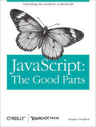
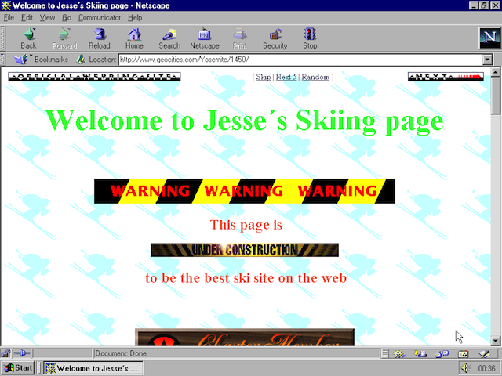
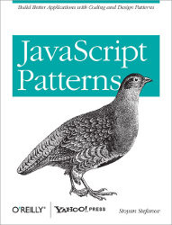
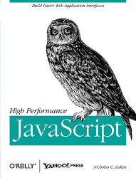

Serious Javascript
why JavaScript is great, & how you can write great JavaScript
Ian Truslove / ian.truslove@nsidc.org / @iantruslove
UCAR Software Engineering Assembly, 1 April 2013
Intro
- Audience
- Goals
- History
Outline
- Language Overview
- In-browser JS
- Server-side JS
- Software Engineering
1. Overview of JavaScript
 Image credit: http://static.guim.co.uk/sys-images/Lifeandhealth/Pix/pictures/2008/11/05/oyster1.jpg
Image credit: http://static.guim.co.uk/sys-images/Lifeandhealth/Pix/pictures/2008/11/05/oyster1.jpg
A Quick Tour of the Dark Lands...
Wat?
The Beautiful Parts
- First class functions
- Closures, lexical scope
- Lambdas
- Functional arrays and objects
- (proper tail calls?)
The Strong Parts
- Tools for implementing language features
- Stronger for composition than inheritance
- Widely-deployed platform
- (basically any web browser)
The Unexpected Parts
- Prototypal inheritance
- Using specialized instances as the basis for generalization
Essential Reading
Douglas Crockford - JavaScript: The Good Parts
Thin book, lots of ideas. Disagree with it once you have studied it.
Image credit: http://www.webdesignersreviewofbooks.com/images/69.jpgExample
// Write some 2d array operations
// to process things like this:
var testData = [
[0.1, 0.2, 0.2, 0.2, 0.1],
[0.1, 0.2, 0.3, 0.2, 0.1],
[0.1, 0.3, 0.4, 0.3, 0.1],
[0.1, 0.2, 0.3, 0.2, 0.1],
[0.1, 0.2, 0.2, 0.2, 0.1] ];
Programming by intent
var testData = [
[0.1, 0.2, 0.2, 0.2, 0.1],
[0.1, 0.2, 0.3, 0.2, 0.1],
[0.1, 0.3, 0.4, 0.3, 0.1],
[0.1, 0.2, 0.3, 0.2, 0.1],
[0.1, 0.2, 0.2, 0.2, 0.1] ];
// What's the max value in the array?
ops2d.max(testData);
> 0.4
Encapsulation with object literals
var ops2d = {
max: function (data) {
var max = ... // calculate max
return max;
}
}
Array methods
var ops2d = {
max: function (data) {
var maxOfEachRow = data.map(maxInRow)
return maxInRow(maxOfEachRow);
}
}
Extract and encapsulate
var ops1d = {
max: function (row) {
return row.reduce(
function (acc, current) {
return Math.max(acc, current);
});
}
};
var ops2d = {
max: function (data) {
// Local var was flattened
return ops1d.max(data.map(ops1d.max));
}
};
Done
// Try it...
var testData = [ [0.1, 0.2, 0.2, 0.2, 0.1], /* etc... */ ];
var ops1d = { /* ... */ };
var ops2d = { /* ... */ };
ops1d.max([1,2,3,2,1]);
> 3
ops2d.max(testData);
> 0.4
Another example
// How about scaling the whole data array?
ops2d.scale(testData, 2);
> [ [0.2, 0.4, 0.4, 0.4, 0.2], [ /* etc ... */ ] ]
First level of implementation
var ops2d = {
scale: function (data, scale) {
return data.map(
function (row) {
return row.map(
function (datum) {
return datum * scale;
});
});
}
};
Extract and clean up
var ops1d = {
scale: function (row, scale) {
return row.map(
function (datum) { return datum*scale; }
);
}
};
var ops2d = {
scale: function (data, scale) {
return data.map(
function (row) { return ops1d.scale(row, scale); }
);
}
};
ops2d.scale(testData, 2);
> [ [0.2, 0.4, 0.4, 0.4, 0.2], /* ... */ ]
Generalize
// Note assignment to the object by key:
ops2d.map = function (data, fn) {
return data.map(
function (row) { return row.map(fn); }
);
};
ops2d.map(testData, function (datum) { return datum*2 });
> [ [0.2, 0.4, 0.4, 0.4, 0.2], /* ... */ ]
Generalize further
ops2d.map = function (data, fn) {
return data.map(
function (row) { return row.map(fn); }
);
};
var scaler = function(scale, datum) {
return scale*datum;
};
// Wouldn't it be nice if...
ops2d.map(testData, scaler.curry(2));
Adding a curry function to Functions
// `prototype` is the mechanism for inheritance
Function.prototype.curry = function (arg) {
var fn = this;
return (function(x) {
return fn(arg, x);
});
};
(scaler.curry(2))(3);
> 6
Composability!
ops2d.map = function (data, fn) { /* ... */ }
// A new transformation:
var threshold = function(min, datum) {
return Math.max(min, datum);
};
ops2d.map(testData, threshold.curry(0.2));
> [ [0.2, 0.2, 0.2, 0.2, 0.2],
[0.2, 0.2, 0.3, 0.2, 0.2],
[0.2, 0.3, 0.4, 0.3, 0.2], /* etc ... */
2. Standardization
 Image credit: http://untreaty.un.org/cod/avl/images/ha/udhr/photo%20gallery/03-large.jpg
References for this section: http://en.wikipedia.org/wiki/ECMAScript
Image credit: http://untreaty.un.org/cod/avl/images/ha/udhr/photo%20gallery/03-large.jpg
References for this section: http://en.wikipedia.org/wiki/ECMAScript
ECMAScript 3
Dec 1999
The JavaScript everyone knows
ECMAScript 4
n/a - abandoned
Contained classes, a module system, optional type annotations and static typing (probably using a structural type system), generators and iterators, destructuring assignment, and algebraic data types
ECMAScript 5
Dec 2009
Incremental improvements over ES3
Strict mode, object getters and setters, seal and freeze methods,
new array methods incuding indexOf, map, reduce, filter
Harmony (ECMAScript 6?)
tbd
Scaled-down version of ES4
Harmony (possible features)
let,const, andfunctiondefinitions in block scope- destructuring:
let {x, y} = point; - modules
- classes
- proxies (multiple inheritance)
- binary data types
- maps, sets, weak maps
- iterators, generators, array comprehensions
Harmony (possible features)
- default parameter values in functions
rest,spread- ellipsis args in function param lists- arrow function syntax (c.f. CoffeeScript):
let identity = (x) => x - Clean lambda syntax:
[1, 2, 3].map(x => x*x); - Deferreds and promises
- Proper tail calls
3. Front End Development
 Image credit: http://img.gawkerassets.com/post/4/2013/02/geocities2.pngChallenges for Front End Development
- Browser inconsistency
- High variability of platform capabilities
- High variability between feature implementation on browsers (IE is particularly bad)
- Code management
- Egregiously poor engineering, e.g. copy-paste code, google coding...
- Callback spaghetti
- Poor organization
- Performance
- Poor implementations
- 80/20
JS Browser Support
 Image credit: http://www.37days.com/images/various/voodoo_1000x625.jpg
Image credit: http://www.37days.com/images/various/voodoo_1000x625.jpg
JS Browser Support
- ES5: ~ IE9+, FFX4+, Chrome7+, Safari 5.1+
- ES6: <40% in FFX 17
Source: http://kangax.github.com/es5-compat-table/, http://kangax.github.com/es5-compat-table/es6/
Browser Support
- No simple answer
- Compatibility tables
- Kangax's ES5 and ES6 tables
- QuirksMode.org
- Cross-platform libraries
- jQuery, Prototype, etc.
- Shims, polyfills, fallbacks
Code Management
Stoyan Stefanov - JavaScript Patterns
Covers the basics, through to patterns that are ubiquitous in JS library code.
Image credit: http://www.i-newswire.com/Uploads/64855_2_2.jpgPerformance
Steve Souders - High Performance Web Sites
Covers web app performance holistically. Essential for any front end developer.
Image credit: http://blog.monitor.us/wp-content/uploads/2012/08/high-performance-web-sites.jpgPerformance
Nick Zakas - High Performance JavaScript
Lots of JavaScript performance knowledge, tips, and tricks.
Image credit: http://d.gr-assets.com/books/1328834985l/7008656.jpg4. Server-Side JavaScript
Implementations & Characteristics
Node.js - native C++ implementation, based on Google V8 engine. Includes npm package manager.
Rhino - Java implementation of a JS engine, from Mozilla. Used interactively, or embedded to add JS scripting into Java apps.
Envjs - JS implementation of a browser's JS functionality. Different back ends, but primarily for Rhino. Primarily used for headless testing.
PhantomJS - headless webkit browser with JS API and REPL. Frequently used for testing, also as a scriptable browser.
JSC - JS parts of WebKit, exposed as REPL or interpreter script.
Node.js Overview
- Event-based, non-blocking programming model
- Fast, efficient, especially for distributed systems
- Offers possibility of code reuse across server and client
- Excellent package management system (
npm) and ecosystem
Node's Canonical Example: a Web Server
var http = require('http');
http.createServer(function (req, res) {
res.writeHead(200, {'Content-Type': 'text/plain'});
res.end('Hello World\n');
}).listen(8080, '127.0.0.1');
console.log('Server running at http://127.0.0.1:8080/');
Node Package Manager
- > 26,000 packages
- Web frameworks and tools
- Database connectivity
- Functional libraries
- Highly active community
- Good command-line tool
5. Engineering Practices
Modules
- ES6
- CommonJS, AMD, UMD
- Script Loaders
Tools
Libraries
Questions
any application that can be written in JavaScript, will eventually be written in JavaScript
"Atwood's Law", http://www.codinghorror.com/blog/2007/07/the-principle-of-least-power.html
This presentation: http://iantruslove.github.com/serious-javascript-presentation